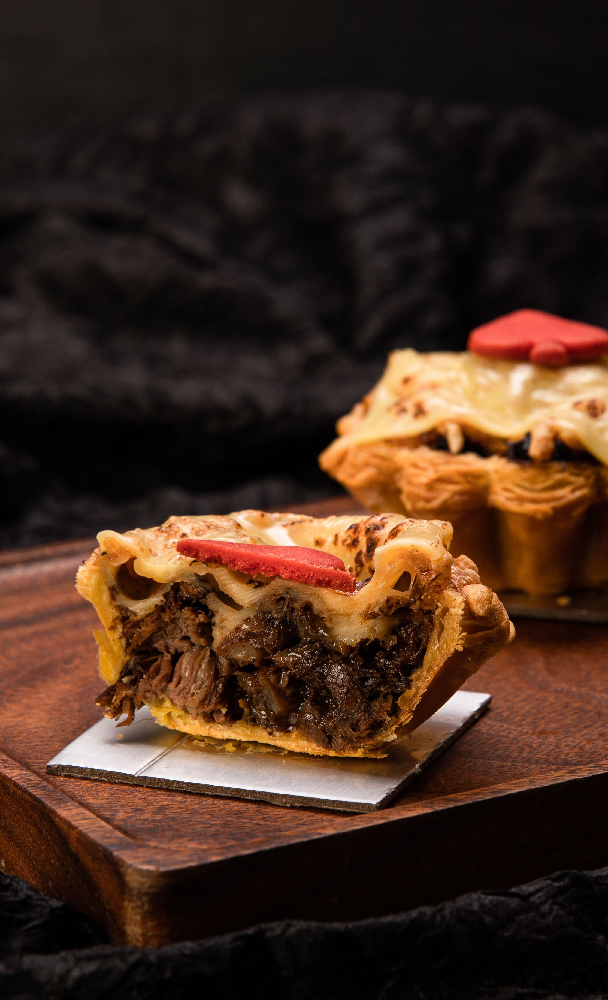

Steak Pie

Description
A hearty steak pie filled with slow-cooked chunks of tender beef in a rich ale and onion gravy, encased in crisp, golden shortcrust pastry and finished with a flaky puff pastry lid. Perfect comfort food with deep, savoury flavours.
Ingredients
- 500g braising steak, diced
- 1 onion, finely chopped
- 2 cloves garlic, minced
- 2 tbsp plain flour
- 330ml dark ale
- 250ml beef stock
- 1 tbsp tomato purée
- 1 tsp Worcestershire sauce
- 1 tsp fresh thyme (or ½ tsp dried)
- Salt and black pepper
- 1 sheet shortcrust pastry
- 1 sheet puff pastry
- 1 egg, beaten (for glazing)
- 1 tbsp vegetable oil
Steps
- Heat the oil in a pan and brown the diced beef in batches. Remove and set aside.
- Cook the onion until softened, add the garlic, then stir in the flour and cook for one minute.
- Return the beef to the pan and add the ale, beef stock, tomato purée, Worcestershire sauce and thyme. Simmer gently for 1½–2 hours until the beef is tender and the gravy has thickened. Allow to cool.
- Line a pie dish with the shortcrust pastry and spoon in the cooled steak filling.
- Place the puff pastry over the top, trim the edges and crimp to seal. Cut a small steam hole in the centre.
- Brush the pastry with beaten egg for a golden finish.
- Bake in a preheated oven at 200°C (180°C fan) for 30–35 minutes, or until the pastry is puffed and golden brown.
- Leave to rest for 5–10 minutes.
- Serve and enjoy!